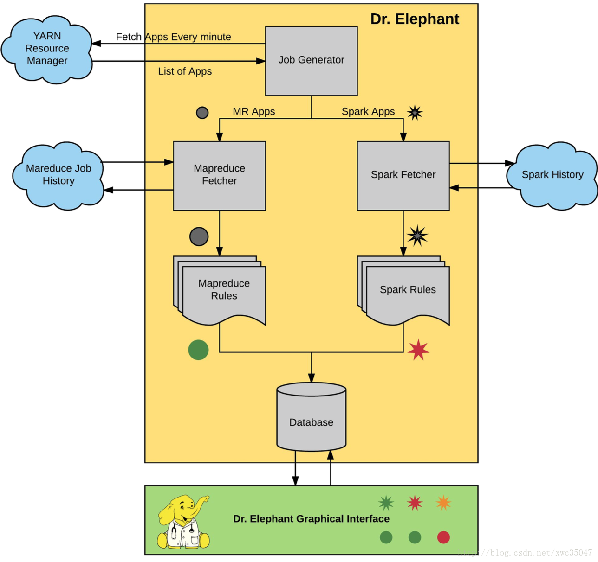
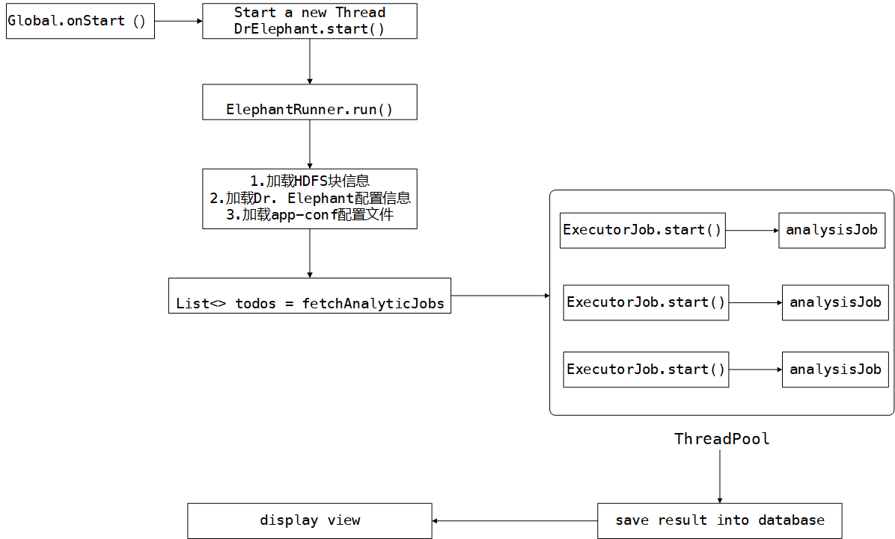

引言
目前Spark的应用非常广泛，但由于Spark推出的时间不是很长，针对Spark的优化往往靠开发人员的经验，公司内部为了帮助开发人员了解和优化他们的流程，不得不组织培训来告诉他们如何优化自己的任务，但这并没有真正解决我们的问题。
LinkedIn公司也注意到这个问题 ，不同Hadoop使用经验的员工使用不同的技术在集群中运行他们的任务。这意味着，针对不同的用户、不同的技术进行常规的培训变的越来越难，而且这样的工作根本不具备良好的扩展性。
直到2016年，LinkedIn的Hadoop团队开始代替员工进行工作流分析，并给出任务的优化建议。作为优化工作的第一步，基于一些简单规则，给予用户一些建议，并取得了明显的优化效果。但是，随着用户的增加，由于用户参与总会有些延迟，使得我们越来越难提供足够的支持资源。没有办法验证我们是否达到了任务性能的优化目标或者保证性能优化方向的全覆盖。因此，我们需要一个标准化和自动化的过程。
Hadoop的专家们审查流程时发现几个常见的经常性的优化模式，并在此基础上，决定开始一个新的实验项目，同时优化Hadoop平台开发者和Hadoop使用者的时间。这就是Dr.Elephant的诞生过程。
当然开源的Dr.Elephant一方面对Spark任务的性能监控和评价不够全面，另一方面，只是简单地展示目前的参数和任务运行时的状态数据，并没有很好地利用任务运行时的状态特征形成评价指标。
本文先系统分析Dr.Elephant的工作原理以及其对作业性能评价的启发式算法。
系统架构
Dr. Elephant 的系统架构如下图。主要包括三个部分：
- 数据采集：数据源为 Job History
- 诊断和建议：内置诊断系统
- 存储和展示：MySQL 和 WebUI

Dr.Elephant定期从Hadoop平台的YARN资源管理中心获取近期所有的任务，这些任务既包含成功的任务，也包含哪些失败的任务。每个任务的元数据，例如任务计数器、配置信息以及运行信息都可以从Hadoop平台的历史任务服务端获取到。一旦获取到了任务的元数据，Dr.Elephant就基于这些元数据运行启发式算法，然后会产生一份该启发式算法对该任务性能的诊断报告。根据每个任务的执行情况，这份报告会为该任务标记一个待优化的严重性级别。严重性级别一共分为五级，报告会对该任务产生一个级别的定位，并通过级别来表明该任务中存在的性能问题的严重程度。
源码整体流程

评价指标
针对Spark作业，Dr. Elephant会从五个方面来进行综合评价Spark Configuration、Spark Executor、Job、Stage和GC层面。
所有的评价指标最后都划归到五个级别，如下表
| NONE | LOW | MODERATE | SEVERE | CRITICAL |
|---|---|---|---|---|
| 0 | 1 | 2 | 3 | 4 |
Spark Configuration
计算公式
$$
severity= \max({serializerSeverity, shuffleAndDynamicAllocationSeverity})
$$
- serializerSeverity Spark的序列化器，对应配置中的spark.serializer
| 序列化器配置信息 | 严重程度 |
|---|---|
| 序列化器没配置或者也不为KryoSerializer | MODERATE |
| 序列化为KryoSerializer | NONE |
- shuffleAndDynamicAllocationSeverity shuffle service和动态分配
| 是否动态分配 | 是否开启shuffle服务 | 严重程度 |
|---|---|---|
| * | true | NONE |
| false | fasle | MODERATE |
| true | fasle | SEVERE |
- 拟增加评价指标，定义单节点资源为$Y(yarnNodeManagerCpuCores,yarnNodemanagerMemory)$分别表示集群节点所管理的cpu核数和内存大小，Spark作业申请资源为$E(executorCores,executorMemory)$，有如下定义
$$
从cpu角度出发单节点可以分配的Executor个数cpuExecutorNums = \frac{Y_1}{E_1} \\
从memory角度出发单节点可以分配的Executor个数memExecutorNums= \frac{Y_2}{E_2} \\
skewRadio=\frac{cpuExecutorNums}{memExecutorNums}
$$
默认的严重程度指标如下所示
| skewRadio | >=2 | >=1.75 | >=1.5 | >=1.25 | |
|---|---|---|---|---|---|
| 严重程度 | CRITICAL | SEVERE | MODERATE | LOW | NONE |
Spark Executor Metrics
计算公式
$$
severity= \max({storageMemoryUsedSeverity, taskTimeSeverity,inputBytesSeverity,shuffleReadBytesSeverity,shuffleWriteBytesSeverity})
$$
- storageMemoryUsedSeverity
这里需要的是两个指标
- storageMemoryUsedDistribution：将Executor中Storage存储使用的情况为序列类型，先对分布进行排序，得到分布数组，取索引值分别为序列length*{0%,25%，50%，75%，100%}所对应的值组成(min,p25,mid,p75,max)的五元组
- ignoreMaxBytesLessThanThreshold：设置的比较阈值，默认为100M
| storageMemoryUsedDistribution | 严重程度 |
|---|---|
| 最大值小于ignoreMaxBytesLessThanThreshold | NONE |
| 中间值为0 | CRITICAL |
| 最大值除以中间值 | |
| >=10 | CRITICAL |
| >=10^0.5 | SEVERE |
| >=10^0.25 | MODERATE |
| >=10^0.125 | LOW |
- taskTimeSeverity
两个指标Executor task执行时间分布情况和最长时间阈值
- inputBytesSeverity
Executor总共输入大小分布和阈值
- shuffleReadBytesSeverity
每个Executor总共的Shuffle读入大小分布情况和阈值
- *shuffleWriteBytesSeverity *
每个Executor总共的Shuffle读入大小分布情况和阈值
Spark Stage Metrics
计算公式
$$
severity= \max{(stageFailureRateSeverity +: (taskFailureRateSeverities ++ runtimeSeverities)): _*}
$$
- stageFailureRateSeverity
失败比例 faileRate=失败的Stage个数/总共的Stage个数
| faileRate | >=0.5 | >=0.3 | >=0.1 | |
|---|---|---|---|---|
| 严重程度 | CRITICAL | MODERATE | LOW | NONE |
- taskFailureRateSeverities
遍历每个Stage，得出task失败的比例，task失败率对应的严重程度与Stage失败相同
- runtimeSeverities
每个Stage运行时间和Executor的加权averageExecutorRuntime
$$
averageExecutorRuntime=\frac{stage.runtime}{numofexecutor}
$$
| averageExecutorRuntime | >=60 | >=45 | >=30 | >=15 | |
|---|---|---|---|---|---|
| 严重程度 | CRITICAL | SEVERE | MODERATE | LOW | NONE |
| ### Spark Job Metrics | |||||
| 计算公式 | |||||
| $$ | |||||
| severity= \max{(jobFailureRateSeverity +: taskFailureRateSeverities): _*} | |||||
| $$ | |||||
| ### Executor GC | |||||
| 计算公式 |
$$
severity = gcSeverityThresholds.severityOf(\frac{jvmGcTimeTotal}{executorRunTimeTotal})
$$
- jvmGcTimeTotal：为运行过程中所有的jvm gc时间总和
- executorRunTimeTotal：为Executor总共的持续时间
- gcSeverityThresholds：为一个序列值，默认为(0.08,0.1,0.15,0.2)定义了不同的阈值对应的不同严重程度
定义
$$
radio = \frac{jvmGcTimeTotal}{executorRunTimeTotal}
$$
具体比例如下：
| radio | >=0.2 | >=0.15 | >=0.1 | >=0.08 | |
|---|---|---|---|---|---|
| 严重程度 | CRITICAL | SEVERE | MODERATE | LOW | NONE |